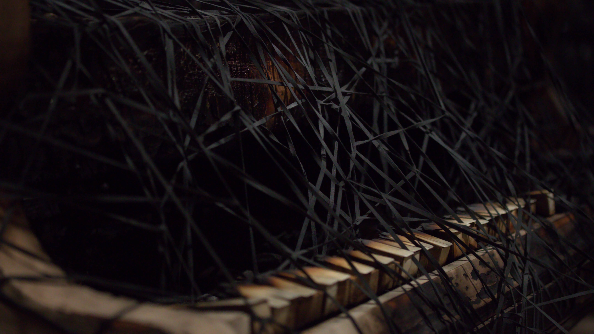
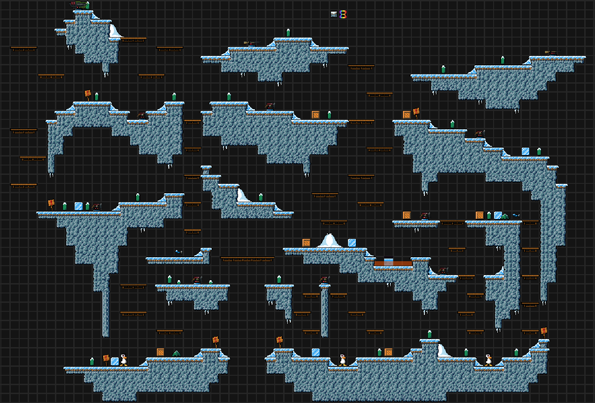
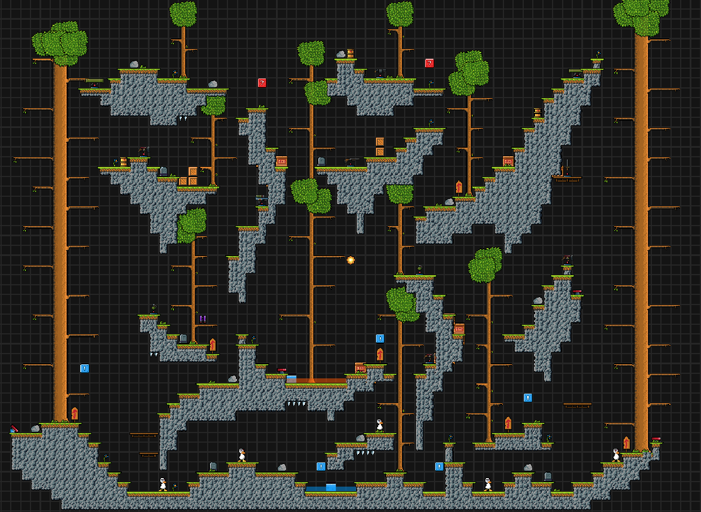
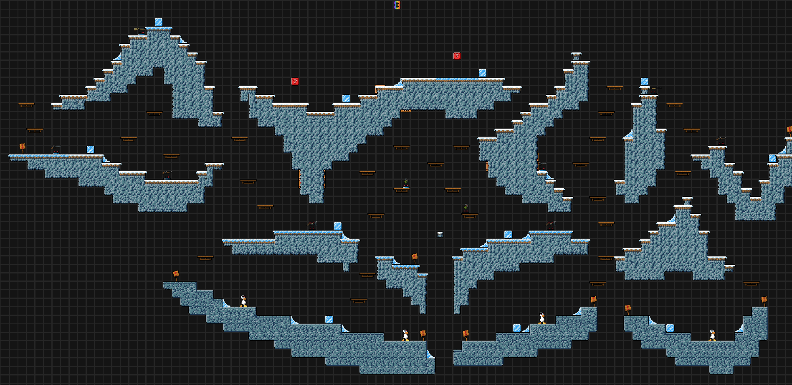
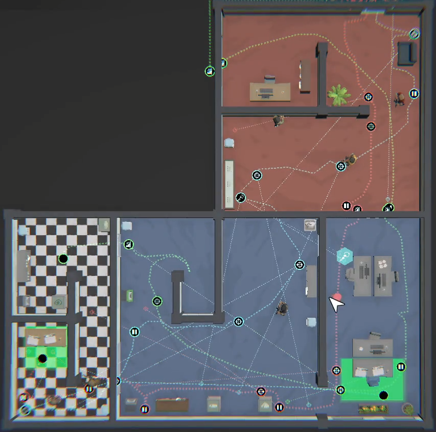
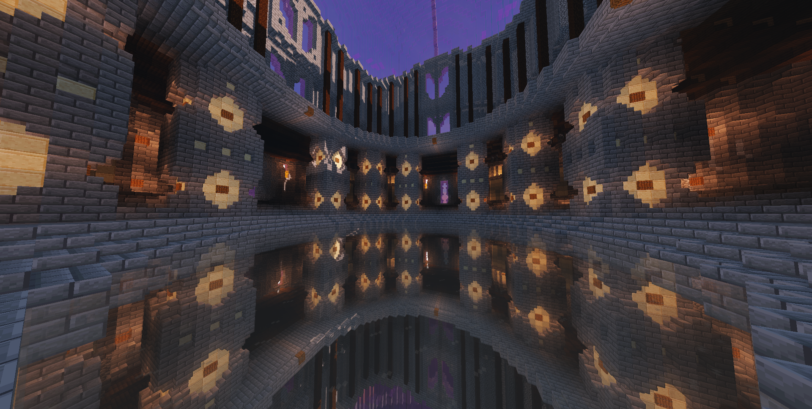
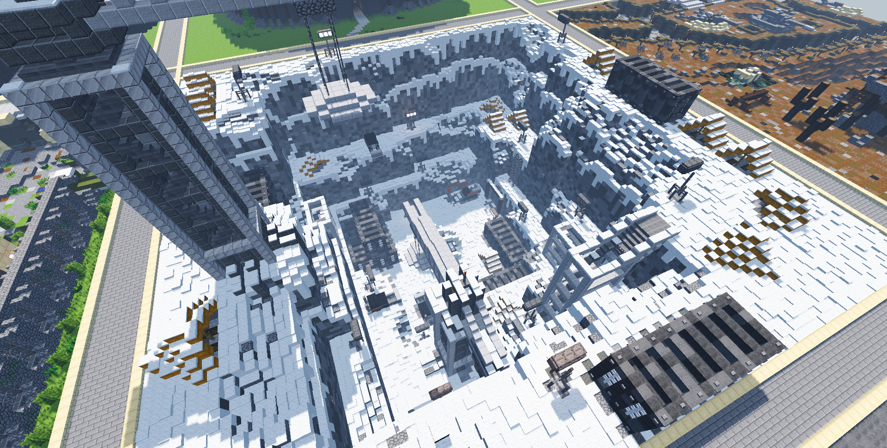

Fotografía
A lo largo de mi trayectoria personal, descubrí una verdadera pasión por la fotografía, un campo que rápidamente se convirtió en una de las formas de expresión en las que mejor me desenvuelvo. Esta actividad alimenta mi creatividad y me permite capturar perspectivas únicas.
DCB PicturesDnD
Dungeons & Dragons es un juego de rol que me permite expresar mi creatividad a través de escenarios inmersivos e interacciones sociales enriquecedoras.
Calabozos & DragonesDiseño de Niveles
Los videojuegos ocupan un lugar importante en mi vida. Son tanto una forma de expresar mi creatividad como una oportunidad para compartir experiencias con personas de todo el mundo.
Diseño de NivelesMás detalles
La fotografía
En mi trayectoria fotográfica, comencé a los 10 años probando mi primera cámara con algunas hormigas.
Unos años después, descubrí la fotografía urbana y comencé a tomar fotos de la Ciudad de México.
Eventualmente, durante mis estudios en el Lycée Franco-Mexicain, tuve la oportunidad de certificarme en Canon Academy, y desarrollé un gusto por la fotografía macro y urbana.
Hoy en día, no solo he tenido la suerte de viajar por el mundo, sino que también me gusta salir a la calle y capturar fotos interesantes de la ciudad, la gente y los objetos.
Por mi parte, veo la fotografía como un medio para capturar una visión desde un punto de vista diferente al habitual, y encontrar un mundo y una historia distinta dentro del mismo mundo que conocemos.

Exposición en el Gran Palacio "The Soul Trembles" por Chiharu Shiota 2025
Exposición en el Gran Palacio "The Soul Trembles" por Chiharu Shiota 2025
Japón, Tokio, Senso-ji 2023

Japón, Tokio, Tokyo Tower 2023

Japón, Tokio, Tokyo Sky Tree 2023
Donjons et Dragons
Descubrí el juego de rol Donjons et Dragons por casualidad durante la pandemia, y rápidamente se convirtió en una parte importante de mi vida. Como organizador de la mesa de juego, este pasatiempo me permitió desarrollar habilidades en liderazgo, organización y gestión de grupos.
Este juego también ha sido una fuente de desarrollo personal, ayudándome a expresar mejor mis emociones y a avivar mi creatividad. Me dio la oportunidad de diseñar mundos detallados, contar historias legendarias y crear aventuras cautivadoras. Además, Donjons et Dragons enriqueció mi vida permitiéndome hacer nuevas amistades mientras exploraba universos imaginarios.

Un mapa dibujado por mí para una aventura en el mundo imaginario de Iacedia
Un mapa dibujado con software por mí para una aventura en el mundo imaginario de Sattia
Los mundos digitales
Desde mi infancia, mi descubrimiento de los mundos virtuales despertó una fascinación por el universo digital. Con el tiempo, comprendí que los videojuegos no solo son una forma de entretenimiento, sino también una forma de expresión creativa y una herramienta poderosa para conectar con personas de todo el mundo.
Estos universos me ofrecieron la oportunidad de diseñar mis propios niveles, acertijos, estrategias y creaciones, estimulando mi imaginación y mi espíritu de innovación.
  Algunas de mis creaciones de niveles en el juego Duck Game
Diseño de una estrategia en el juego No Plan B
 Creación de estructuras en Minecraft para un cliente canadiense
Contactarme
¡Si quieres enviarme un mensaje, es por aquí!
 Discord
Discord
 Instagram
Instagram
 LinkedIn
LinkedIn
 Correo electrónico
Correo electrónico
 WhatsApp
WhatsApp